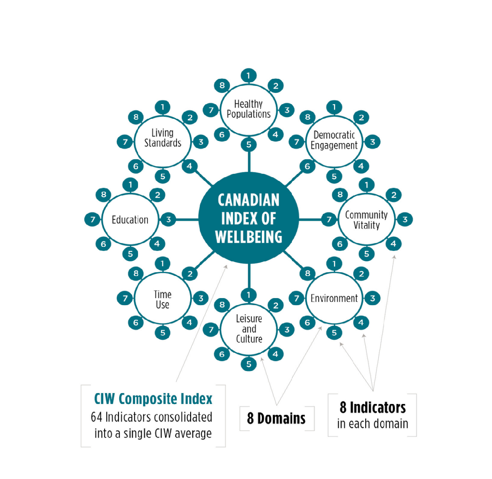

Layoffs Impact on Workers
The layoffs have impacted the workers situation considerably in a certain number of parameters.
- Livelihood: Layoffs can have a profound impact on individuals and their families.
- Stress: Job loss can lead to emotional distress and anxiety among workers.
- Financial Strain workers face financial challenges after being laid off.
Interventions Design Factors
Key factors to consider when designing interventions.
- Tailored Solutions: Interventions should be customized to meet the specific needs of the workers.
- Collaborative Approach: Engaging workers in the intervention design process fosters ownership.
- Measurable Outcomes: Clear metrics help gauge the effectiveness of the implemented interventions.
SMART Criteria
A SMART goal is any goal with a carefully planned, concise, and trackable objective. To be such a goal needs to be specific, measurable, achievable, relevant, and time-based. Bringing structure and trackability to goal setting increases the chances goals will be achieved, and it helps align the organization around those goals.
- Specific: Clearly define what you want to achieve.
- Measurable: Use quantifiable measures to track progress.
- Achievable: Ensure that the goals are realistic and attainable.
- Relevant: Align KPIs with the overall objectives of the interventions.
- Time-bound: Set a timeframe for achieving the goals.
The Framework
Healthy Populations
Looks at how healthy and happy a whole group of people is.
- Blue Zone Research: Watch Video
- Blue Zone Survey: View Survey
- PMR: Watch Video
- Sleep is your power: Watch Video
- Optimal conditions to improve sleep: Watch Video
Time Domain
Checks if they balance work, free time, family, and personal activities well.
Time might be difficult for people to manage during layoffs. Activities that might help people improve their use of time include:
- Management Workshops and Stress Reduction Sessions
- Goal setting challenges For example:
- Managing Time & Stress: View Course
- To do list-Time Planner: Visit App Store
- Box Breathing: View Video
Education
Education-related interventions can play a crucial role in helping these workers learn new skills and have an open mind.
- Faster capital: Visit Link
- Government of Canada Employment Insurance (EI) and courses or training program: View Program
- Find Employment and Training Services: Visit Link
Environment
Environmental interventions for laid-off workers involve initiatives aimed at addressing the broader economic, social, and environmental factors that contribute to job loss and impact the well-being of affected individuals
- Environmental Restoration Projects: View Projects
- Entrepreneurship in Sustainable Practices: Visit Link
- Urban Farming Initiatives: View Initiatives
- Recycling and Waste Management Programs:View Programs
Community Vitality
Beneficial for skills-sharing or mentorship programs that give them a feeling of purpose and worth throughout their career transitions and challenging times, while also utilizing their experience to make important contributions to the community.
- Empowering Laid-off Employees:Full-day Gathering
- Skills-sharing or Mentorship Program/Workshop:View Programs
- Handbook:Visit PDF
- Collaborate with festival organizers:Visit Link
- Brantford Kinsmen Ribfest:Visit Official Festival Website
Living Standards
It keeps an eye on factors such as employment quality, labor market stability, income volatility, and poverty rates.
- Financial Literacy Programs:View Programs
- Housing Assistance:Visit Link
- Access to Social Benefits:Visit Link
Demographic Engagement
Promoting democratic involves empowering individuals to participate in civic activities, advocate for their interests, and contribute to democratic processes.
- Civic Education Programs:View Programs
- Voter Registration Drives:Visit Link
- Mock Elections and Simulations:Visit Link
- Legal Rights Workshops:View Workshops
Culture and Leisure Activities
This subsection considers the cultural and leisure opportunities available to individuals.
- Art and culture:View Programs
- Hiking/trekking:View Hiking Locations
- Book clubs:View Book Clubs
- Music:View Festival Guide
Key Takeaways
Quisque suscipit felis eget diam ultricies, auctor mattis nisi gravida.
Evaluation
Evaluate the impact of interventions on workers' well-being and reemployment. Conduct surveys, interviews, and follow-up assessments to gather feedback from laid-off workers who participated in the interventions. Analyze the data collected to measure changes in mental health, financial stability, and job prospects. Use this information to refine and improve future intervention strategies.
Tailored Interventions
Recognizing the diverse needs of laid-off employees is crucial. Tailoring interventions to address specific skill gaps, industry trends, and individual circumstances enhances the effectiveness of the support provided. Offer personalized career counseling, skills training programs, and job placement services tailored to the unique backgrounds and aspirations of each worker. Provide resources for retraining in emerging industries and facilitate access to financial assistance for education and certification programs.
Research
Invest in research to continuously improve and innovate interventions. Collaborate with academic institutions, think tanks, and research organizations to conduct longitudinal studies on the long-term effects of layoffs and interventions. Explore innovative approaches to job training, mental health support, and community reintegration. Stay informed about industry trends, labor market projections, and technological advancements to ensure interventions remain relevant and effective in a rapidly changing economy.
Partnerships and Collaboration
Collaborating with employers, industry stakeholders, and educational institutions strengthens interventions. Partnerships can provide insights into current market needs, potential job opportunities, and avenues for ongoing skill development. Establish partnerships with local businesses to create internship programs, job shadowing opportunities, and on-the-job training initiatives for laid-off workers. Engage with trade unions, professional associations, and government agencies to leverage resources and expertise in supporting displaced workers.
Documentation and Sharing of Best Practices
Documenting successful interventions and sharing best practices with the broader community contribute to collective knowledge and enhance the impact of support programs. Open communication and collaboration benefit both employees and organizations. Create case studies, white papers, and reports highlighting successful interventions and their outcomes. Share these resources with other employers, government agencies, and nonprofit organizations to promote replication and adoption of effective strategies. Foster a culture of knowledge exchange and continuous learning within the community of practitioners dedicated to supporting laid-off workers.